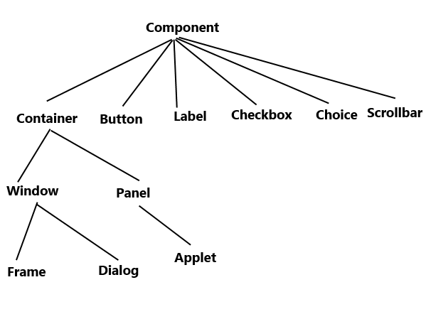
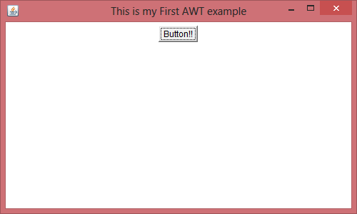
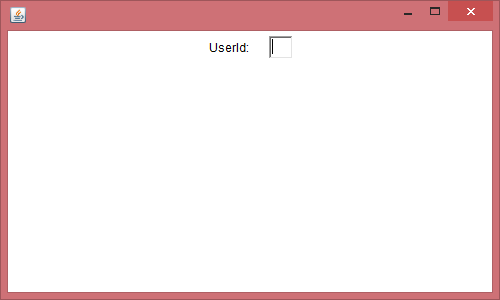

AWT stands for Abstract Window Toolkit. It is a platform dependent API for creating Graphical User Interface (GUI) for java programs.
Why AWT is platform dependent? Java AWT calls native platform (Operating systems) subroutine for creating components such as textbox, checkbox, button etc. For example an AWT GUI having a button would have a different look and feel across platforms like windows, Mac OS & Unix, this is because these platforms have different look and feel for their native buttons and AWT directly calls their native subroutine that creates the button. In simple, an application build on AWT would look like a windows application when it runs on Windows, but the same application would look like a Mac application when runs on Mac OS.
AWT is rarely used now days because of its platform dependent and heavy-weight nature. AWT components are considered heavy weight because they are being generated by underlying operating system (OS). For example if you are instantiating a text box in AWT that means you are actually asking OS to create a text box for you.
Swing is a preferred API for window based applications because of its platform independent and light-weight nature. Swing is built upon AWT API however it provides a look and feel unrelated to the underlying platform. It has more powerful and flexible components than AWT. In addition to familiar components such as buttons, check boxes and labels, Swing provides several advanced components such as tabbed panel, scroll panes, trees, tables, and lists. We will discuss Swing in detail in a separate tutorial.
AWT hierarchy

Components and containers
All the elements like buttons, text fields, scrollbars etc are known as components. In AWT we have classes for each component as shown in the above diagram. To have everything placed on a screen to a particular position, we have to add them to a container. A container is like a screen wherein we are placing components like buttons, text fields, checkbox etc. In short a container contains and controls the layout of components. A container itself is a component (shown in the above hierarchy diagram) thus we can add a container inside container.
Types of containers:
As explained above, a container is a place wherein we add components like text field, button, checkbox etc. There are four types of containers available in AWT: Window, Frame, Dialog and Panel. As shown in the hierarchy diagram above, Frame and Dialog are subclasses of Window class.
Window: An instance of the Window class has no border and no title
Dialog: Dialog class has border and title. An instance of the Dialog class cannot exist without an associated instance of the Frame class.
Panel: Panel does not contain title bar, menu bar or border. It is a generic container for holding components. An instance of the Panel class provides a container to which to add components.
Frame: A frame has title, border and menu bars. It can contain several components like buttons, text fields, scrollbars etc. This is most widely used container while developing an application in AWT.
Java AWT Example
We can create a GUI using Frame in two ways:
1) By extending Frame class
2) By creating the instance of Frame class
Lets have a look at the example of each one.
AWT Example 1: creating Frame by extending Frame class
import java.awt.*;
/* We have extended the Frame class here,
* thus our class "SimpleExample" would behave
* like a Frame
*/
public class SimpleExample extends Frame{
SimpleExample(){
Button b=new Button("Button!!");
// setting button position on screen
b.setBounds(50,50,50,50);
//adding button into frame
add(b);
//Setting Frame width and height
setSize(500,300);
//Setting the title of Frame
setTitle("This is my First AWT example");
//Setting the layout for the Frame
setLayout(new FlowLayout());
/* By default frame is not visible so
* we are setting the visibility to true
* to make it visible.
*/
setVisible(true);
}
public static void main(String args[]){
// Creating the instance of Frame
SimpleExample fr=new SimpleExample();
}
}
Output:

AWT Example 2: creating Frame by creating instance of Frame class
import java.awt.*;
public class Example2 {
Example2()
{
//Creating Frame
Frame fr=new Frame();
//Creating a label
Label lb = new Label("UserId: ");
//adding label to the frame
fr.add(lb);
//Creating Text Field
TextField t = new TextField();
//adding text field to the frame
fr.add(t);
//setting frame size
fr.setSize(500, 300);
//Setting the layout for the Frame
fr.setLayout(new FlowLayout());
fr.setVisible(true);
}
public static void main(String args[])
{
Example2 ex = new Example2();
}
}
Output:

How did you manage to color the window (or JFrame, idk…)? It’s in red.
such a nice tutorial ….. now I understand what is swing and what is AWT
Thank you so much